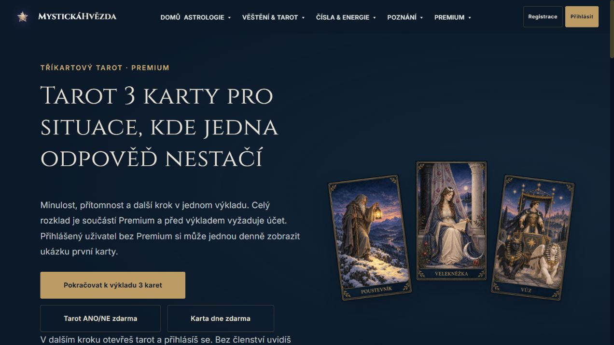
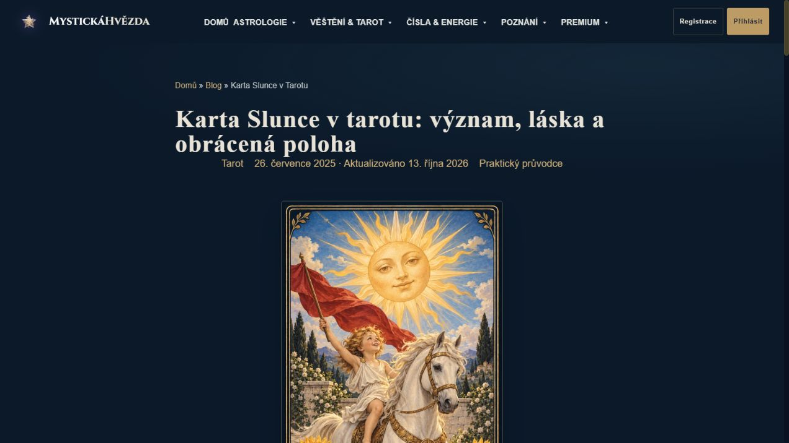
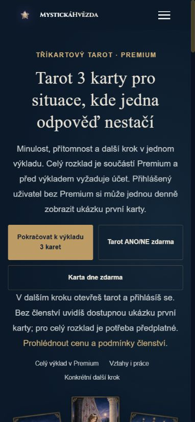
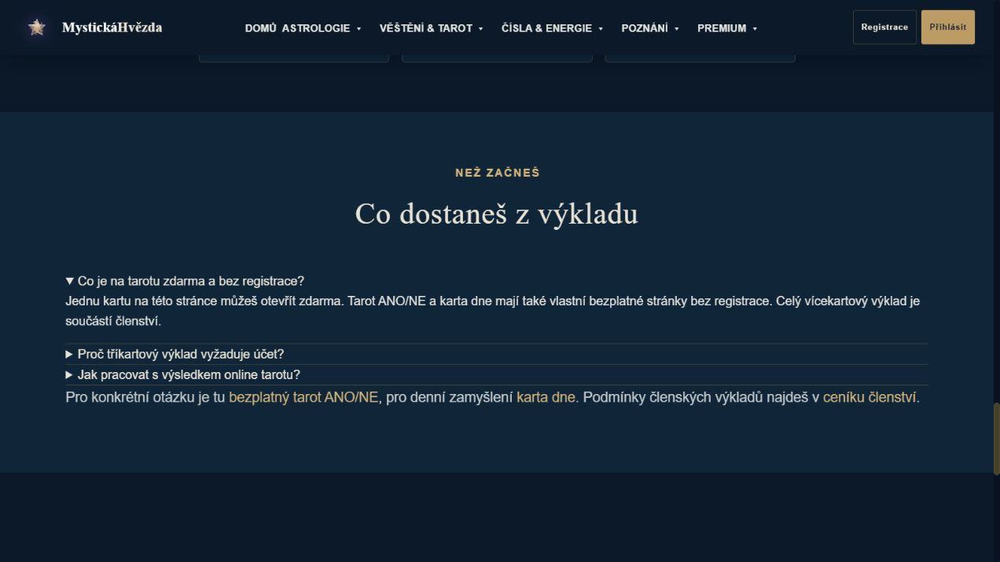

13. ŘÍJNA 2026 · LOKÁLNÍ DÁVKA 2
Tarot, který vysvětlí další krok
Jasnější bezplatný a členský přístup, praktický průvodce Sluncem a propojené významy karet.
4 cílené E2E kontroly prošly. Náhledy jsou lokální, změny zatím nejsou na produkci. Port 3345 slouží statickému náhledu; formuláře zde neposílají data.
Skutečné náhledy



